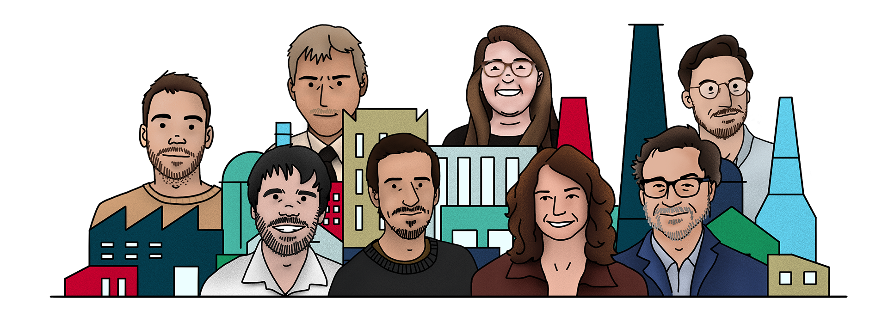

Fabriquer : v.t. transformer industriellement des matières premières en séries d'objets utilisables destinés à la consommation.
Concevoir : v.t. élaborer quelque chose dans son esprit, en arranger les divers éléments et le réaliser.
Comment ces définitions s’incarnent dans une pratique du design qui réponde aux enjeux sociétaux contemporains ?
Quel rôle joue l’entreprise dans la mise en place de nouveaux modèles de production et de consommation, à l’heure d’un bouleversement écologique qui vient questionner notre rapport aux objets ?
Ce mémoire de rencontre donne la parole à des femmes et des hommes qui tentent par leur métier de designer, d’ingénieur ou d’entrepreneur de répondre à ces questions. A travers 8 épisodes audios, ils et elles témoignent de leur vision, de leur engagement mais aussi des défis qui les animent.
Mon parcours scolaire et académique m’a orienté vers un rôle de concepteur. J’ai appris à identifier et à répondre à diverses problématiques. Ce sont les projets complexes trouvant une réponse matérielle que j’ai le plus appréciés.
En parallèle de ma formation, mes interrogations sur les thèmes écologiques n’ont fait que grandir mais en n’interférant que très peu avec les projets menés. Je les voyais comme des exercices qui m’apprendraient à penser, à dessiner, à répondre à des besoins. Comme s’il s’agissait de problèmes sortis d’un manuel scolaire, avec une certaine abstraction. L’énoncé était complexe et intégrait une part de réel, par les études de terrains, par les contraintes techniques et matérielles mais très peu par les conséquences que ceux-ci pourraient avoir. Alors, que se passera-t-il lorsqu’il ne s’agira plus d’un problème de manuel scolaire, que l’avion pour lequel j’ai imaginé un nouveau siège volera pour de vrai et que l’objet connecté que j’ai conçu deviendra inévitablement obsolète en quelques années ?
L’ingénieur et économiste Bruno Parmentier utilise l’expression « Quand on achète un produit, qu’on le veuille ou non, on achète le monde qui va avec ». Il me semble alors intéressant de lui donner un autre point de vue : Quand on conçoit un produit, qu’on le veuille ou non, on conçoit le monde qui va avec.
Après cette prise de conscience, le passage à l’action me semble être une chance. Une chance d’avoir des compétences utiles et de pouvoir m’impliquer au quotidien via le métier que j’exercerais. Et c’est selon moi, au travers de cet engagement professionnel que ma contribution aux changements sociétaux sera la plus forte. En ce sens, ce potentiel de mise à disposition de mes compétences m’apparait de plus en plus comme un devoir et non seulement comme une chance.
Il m’est alors paru nécessaire de prendre le temps de ce mémoire pour mener une réflexion sur le rôle de concepteur, son implication dans les schémas de production et de consommation. Et ainsi m’interroger sur les façons de répondre, à mon échelle, à ces enjeux en me positionnant au mieux en tant que futur designer et ingénieur.
Pour trouver des réponses, j’ai voulu partir à la rencontre de femmes et d’hommes dans l’action, qui tentent au travers de leur métier de répondre à ces questions.
En donnant la parole à ces designers, ingénieurs et entrepreneurs, j’ai voulu partager et conserver, sans les altérer, les enseignements que j’ai pu recevoir de mes différents interlocutrices et interlocuteurs.
Ce mémoire de rencontre est ainsi composé de huit épisodes au format podcast qui permettent de saisir la complexité de l’entreprise. Cette complexité est souvent occultée ou amplement simplifiée lors des projets étudiants. Elle me parait pourtant être au cœur des problématiques liées à la production. Qui sont les personnes qui travaillent derrière la confection d’un objet ? Quelle responsabilité de l’entreprise vis-à-vis de ces femmes et de ces hommes ? Quels maillages complexes régissent la structure et les choix des organisations ?
Pour trouver les bons interlocuteurs, je me suis mis à la recherche d’entreprises industrielles ou contribuant à une certaine production en tachant d’appliquer un certain nombre de filtres. Le premier, a été la notion très subjective de l’utilité des objets produits. Je me suis orienté vers des objets collectifs (poubelle, abris-bus, paratonnerre, etc) et des objets personnels, dont l’utilité fait plus ou moins consensus (matelas, boîtes aux lettres, sécateur, casseroles, etc). J’ai aussi cherché à m’éloigner le plus possible de l’univers du luxe ou des objets superflus. Avec la volonté de me rapprocher d’une écologie inclusive, et non uniquement réservée à « ceux qui peuvent se le permettre ».
Ma quête de personnes sincères, travaillant sur des initiatives pertinentes allait commencer. Je me suis alors heurté à de nouvelles notions subjectives : comment faire le tri parmi la multitude d’initiatives et de revendications et m’assurer de l’honnêteté des démarches exposées ?
L’éco-conception est alors apparue comme un point d’accroche objectif me permettant de comparer et de sélectionner les différentes entreprises. Une étude approfondie du sujet m’a permis de comprendre les outils, les méthodes mais aussi les limites de celui-ci. Vous retrouverez une synthèse de ce travail dans l’onglet « éco-conception », accessible depuis le menu.
La transparence a également été un critère important dans le choix des entreprises à contacter. La mise à disposition d’une grande quantité d’informations m’a maintes fois permis d’obtenir un aperçu clair des projets menés.
Lors de mon travail sur l’éco-conception, j’ai également pu entrevoir un certain nombre de ses limites. L’éco-conception ne permet pas une remise en question systématique des besoins liés aux objets produits. Donner la parole à des personnes participant à des initiatives plus radicales, m’a en ce sens semblé pertinent.
Pour comprendre la marge de manœuvre de designers au sein de grand groupes industriel, j’ai souhaité en rencontrer des avec de fortes convictions écologiques et travaillant au cœur de la machine. Réussir à atteindre des designers dans les industries et m’assurer en amont de leur sensibilité aux enjeux écologiques a été très délicat. Je me suis alors retrouvé face à ce qui est de plus en plus communément appelé des déserteurs. Il s’agit de personnes qui ont quitté leur entreprise, face à l’inaction ou l’incompatibilité de l’activité de celle-ci avec les problématiques écologiques.
Les huit épisodes qui composent mon mémoire correspondent donc à huit rencontres. Il dresse un état des lieux très personnel et non exhaustif de de notre rapport à la consommation et de la production qui lui est associée, de l’entreprise, de ses mutations et du rôle du créateur industriel dans cette machine.